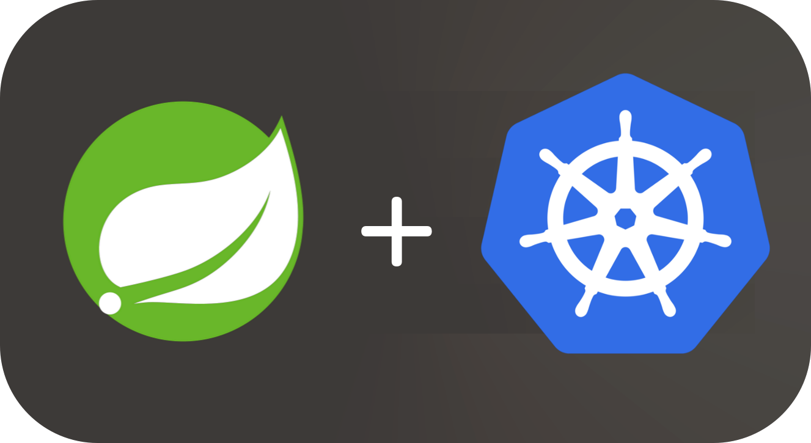

Spring Boot 微服务上容器平台的最佳实践 - 1
在 2019-11-11 Monday 发布于 Java 分类 • 1 min read

前言¶
今天开始开新坑——把Spring Boot 微服务部署到容器平台（K8S，OpenShift）上！
大概内容会包括这些：
- Spring Boot 全家桶（及其他替代品和K8S的替代品）
- 示例程序参考架构
- 创建环境
- 设计和部署Spring Boot 微服务应用
- 总结
这一次，相关的场景是这样的：
Spring Cloud 微服务系统已经提前搞好了，并没有运行在容器平台上，而是直接运行在虚机上。这次就是在结合Spring Boot的组件和OpenShift的相关概念和优势，将其迁移部署到容器平台上。
Spring Boot 全家桶及替代品¶
备注:
替代品请关注K8S的相关替代品, 本次主要目的是结合Spring Boot的组件和OpenShift的相关概念和优势.
框架¶
本系列文章主要关注构建在Spring Boot框架之上的微服务体系结构。Spring Boot 框架可以使用各种版本的Tomcat、Jetty作为它的嵌入式servlet容器。本文只关注在嵌入式Tomcat Server上使用Spring Boot.
客户端库¶
虽然调用微服务通常是通过HTTP发送JSON或XML payload这样简单的事情，但是各种各样的考虑导致了专用客户端库的流行，特别是在Spring Boot环境中。这些库不仅提供与Spring Boot的集成，还提供与微服务体系结构中经常需要的许多其他工具和库的集成。
Ribbon
Ribbon是一个具有内置客户端负载均衡的进程间通信(RPC)库。主要的使用模型包括REST调用和各种序列化方案支持。
这次的实例程序只使用Ribbon的最基本功能。因为Ribbon 就是Spring Boot框架全家桶的一员.
客户端库替代品: gRPC
使用 Protocol Buffers协议.
优势:
- 更好的性能和安全性
劣势:
- 牺牲了兼容性和工具支持
服务注册¶
微服务体系架构通常意味着在私有、混合或公共云中对单个服务进行动态扩展，其中主机的数量和地址不能总是预先预测或静态配置。(说人话, 微服务经常会横向动态扩展.) 解决方案是使用服务注册中心作为发现每个服务的已部署实例的起点。这通常由客户端库或负载均衡层进行匹配，当发现实例不再存在时，该层会无缝地进行故障转移，并更新服务注册表查找的缓存。更进一步说，客户机库和服务注册中心之间的集成可以使查找和调用过程成为单个步骤，并且对开发人员是透明的。
在现代云环境中，这种功能通常由平台提供(说人话: 这个应该由我K8S来做! 你框架做的太多了!  )，而服务复制和扩展是一个核心特性。
)，而服务复制和扩展是一个核心特性。
这次的示例构建在OpenShift之上，就用K8S的Service来做服务注册。
Eureka
Eureka是一种基于REST(REpresentational State Transfer)的服务，主要用于微服务中定位服务，以实现中间层服务器的负载平衡和故障转移。
Ribbon和Eureka之间的紧密集成允许在调用者使用Ribbon库时声明性地使用Eureka.
服务注册替代品:
- Consul - 在Spring Cloud 中与Ribbon集成允许对在 Consul 上注册的服务进行透明和声明性查询。
- ZooKeeper - Apache ZooKeeper是一个集中的服务，用于维护配置信息、命名、提供分布式同步和提供组服务. 同样，在Spring Cloud中ZooKeeper的支持以及与Ribbon的集成允许在调用之前声明性地查找服务实例。
- K8S Service - Kubernetes Service充当内部负载均衡。它标识一组复制的pod，以便代理它接收到的连接。可以在服务本身保持一致可用的情况下，向服务添加或从服务中删除额外的备份pod，从而使依赖于服务的任何东西都可以通过一致的地址引用它。与第三方服务注册中心不同，负责服务复制的平台可以随时提供服务副本的最新准确报告。服务抽象也是与底层平台本身一样可靠的关键平台组件。这意味着客户端不需要为服务注册中心本身的故障保留缓存和帐户。可以声明性地将Ribbon配置为使用OpenShift而不是服务注册中心，而不需要修改任何代码。 (说人话: 上容器平台后, K8S的Service还是值得一用的)
负载均衡¶
对于客户端对无状态服务的调用，高可用性(HA)意味着需要从服务注册中心查找服务，以及可用实例之间的负载平衡。前面提到的客户端库包括合并这两个步骤的功能，但是容器平台通过在 Service 抽象概念中包含负载平衡功能，使得这两个操作变得多余。OpenShift提供一个单一地址，在这个地址中，调用将被负载平衡并重定向到适当的实例。(说人话: Spring Boot虽然提供了库, 但还是要写代码的; 容器平台直接提供Service, Service自动在实例间负载均衡. 对于开发来说, 就是只用配一个Service地址, 就可以负载均衡).
Ribbon
Ribbon 允许在声明的静态实例列表之间进行负载均衡，或者在注册表查找中发现服务的任意多个实例之间进行负载均衡。
负载均衡替代品:
- gRPC - 负载均衡能力介绍链接
- K8S Service - OpenShift通过其 Service的抽象概念提供负载均衡。Service 所公开的Cluster IP地址是提供服务的任何正在运行的副本pod之间的内部负载均衡。在OpenShift集群中，Service 名称解析为这个Cluster IP地址，并可用于负载均衡。这种只能在内部使用, 对于外部地址不能用.
断路器¶
微服务的高度分布式特性意味着远程调用失败的风险更高，因为此类远程调用的数量增加了。断路器模式可以通过隔离有问题的服务和避免破坏性超时来帮助避免这类故障的级联。
Hystrix
Hystrix是一个延迟处理和故障转移功能库，旨在隔离远程系统、服务和第三方库的访问点，中止级联故障，并在不可避免的复杂分布式系统中启用弹性。
Hystrix实现了断路器和 bulkhead 模式.
暂无.
- service mesh算一个. 但是目前用的不多, 也不够稳定.
外部化配置¶
外部化配置管理解决方案可以为配置文件、命令行参数和环境变量的典型组合提供一种优雅的替代方案，这些配置文件、命令行参数和环境变量用于使应用程序更加可移植，并减少对外部更改的响应。
Spring Cloud Config
Spring Cloud Config为分布式系统中的外部化配置提供了服务器和客户端支持。有了Config Server，您就有了一个中心位置来管理跨所有环境的应用程序的外部属性。
- K8S ConfigMaps - ConfigMaps可以用来存储细粒度的信息，比如单个属性，也可以存储粗粒度的信息，比如整个配置文件或JSON blob。它们提供了将配置数据注入容器的机制，同时保持容器与容器平台无关。(个人体验: 目前还不是非常成熟, 比如版本追溯相关功能就没有. )
- Apollo - Apollo（阿波罗）是携程框架部门研发的分布式配置中心，能够集中化管理应用不同环境、不同集群的配置，配置修改后能够实时推送到应用端，并且具备规范的权限、流程治理等特性，适用于微服务配置管理场景。
分布式 Tracing¶
尽管微服务体系结构有很多优点，但是很难分析和排除故障。每个业务请求在不同的层上生成对各个服务的多个调用，以及在各个服务之间的多个调用。分布式 Tracing 将所有单独的服务调用绑定在一起，并通过惟一生成的ID将它们与业务请求关联起来。
Sleuth/Zipkin
Spring Cloud Sleuth为应用程序中请求点上的每个调用和 span ID生成trace ID。这些信息可以与日志框架集成，通过跟踪日志文件来帮助解决应用程序的故障，或者广播到Zipkin服务器并存储分析和报告。
- Jaeger - Jaeger的灵感来自于Dapper和OpenZipkin，是一个完全符合云原生基金会(CNCF) OpenTracing标准的开源分布式跟踪系统。它可以用于监视基于微服务的体系结构，并提供分布式上下文传播和事务监视，以及服务依赖性分析和性能/延迟优化。(关键字: CNCF 标准)
- Dynatrace - APM行业排行第一的商业产品, 贵, 但好用.
- pinpoint - 类似的开源分布式Tracing
- ... - 这类产品还挺多的. Skywalking, New Relic, Appdynamics, Datadog...
代理/路由¶
在每个服务调用之前添加代理，可以在调用之前和之后应用各种 filters，以及微服务体系结构中的许多常见模式，比如A/B测试。静态和动态路由规则可以帮助选择所需的服务版本。
Zuul
Zuul是一种边缘服务，提供动态路由、监视、弹性、安全性等。
Zuul支持多种路由模型，
- 映射到目的地的声明式URL模式，
- 驻留在应用程序 archive之外并动态确定路由的groovy脚本
- Istio - Istio是一个开放的独立于平台的service mesh，它提供流量管理、策略执行和遥测数据收集。Istio旨在管理微服务和应用程序之间的通信.
小结¶
话不多说, 看表:
| Spring Boot 全家桶 | Spring Boot 全家桶 | K8S上替代品 | 其他替代品 | 个人建议 |
|---|---|---|---|---|
| 客户端库 | Ribbon | 无 | gRPC | Ribbon好用; gRPC性能好 |
| 服务注册 | Eureka | Service | Consul和ZooKeeper | Eureka挺好; 上容器Service亦可 |
| 负载均衡 | Ribbon | Service | gRPC | Ribbon挺好; 上容器Service亦可 |
| 断路器 | Hystrix | ~~Service Mesh~~算半个 | 无 | Hystrix |
| 外部化配置 | Spring Cloud Config | ConfigMap | Apollo | Spring Cloud Config够用就用; 否则推荐Apollo |
| 分布式 Tracing | Sleuth/Zipkin | Jaeger | Dynatrace; pinpoint... | 无 |
| 代理/路由 | Zuul | Istio | 略 | Zuul性能够用就用; |